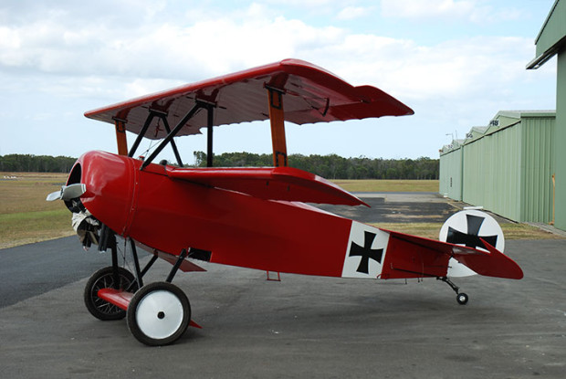

Narodziny ogólnoświatowego lotnictwa
17 grudnia 1903 roku w Kitty Hawk, Orville i Wilbur Wright wykonali pierwszy w historii kontrolowany lot samolotem silnikowym Wright Flyer I. Choć maszyna utrzymała się w powietrzu tylko 12 sekund i pokonała 36 metrów, udowodniła, że człowiek może latać maszynami cięższymi od powietrza.

I Wojna Światowa: (Czerwony Baron i Sopwith Camel)
Wojna zmusiła konstruktorów do gwałtownego rozwoju. Samoloty z drewnianych zabawek stały się śmiertelną bronią. Pojawił się synchronizator karabinu maszynowego (umożliwiający strzelanie przez kręcące się śmigło). Symbolem tej ery stały się pojedynki kołowe (dogfights) oraz legendarny brytyjski myśliwiec Sopwith Camel.

II Wojna Światowa i skok technologiczny: (Era Odrzutowa i Bitwa o Anglię)
Przełomowy moment w historii. Z jednej strony mamy podniebne starcia tłokowych legend, jak Supermarine Spitfire (na których latali polscy piloci z Dywizjonu 303). Z drugiej strony pojawia się pierwszy seryjny myśliwiec odrzutowy – niemiecki Messerschmitt Me 262, który na zawsze zakończył erę samolotów śmigłowych.

Zimna Wojna i wyścig po prędkość (Zimnowojenne Monstra: SR-71 Blackbird)
Apogeum technologicznego wyścigu zbrojeń między USA a ZSRR. Amerykanie tworzą SR-71 Blackbird – naddźwiękowy samolot szpiegowski, który latał tak szybko (Mach 3.3, czyli ponad 3500 km/h) i tak wysoko, że żadna rakieta nie była w stanie go dogonić. 5 lat później oblatano pasażerskiego Concorde'a.

Współczesność i dominacja V Generacji: (Myśliwce V Generacji i Drony)
Dzisiejsze niebo należy do maszyn, które są cyfrowymi centrami dowodzenia, niewykrywalnymi dla radarów (Stealth). Królami przestworzy są amerykańskie myśliwce F-22 Raptor oraz wielozadaniowe F-35 Lightning II. Równolegle pole bitwy i lotnictwo cywilne rewolucjonizują autonomiczne drony sterowane przez sztuczną inteligencję.